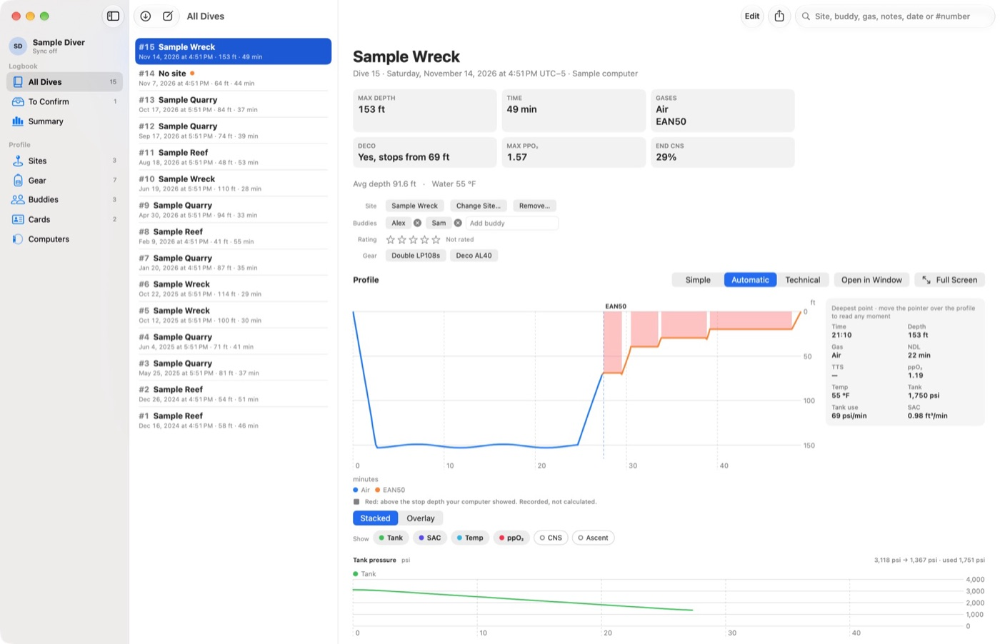
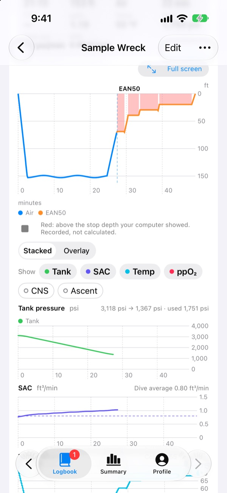
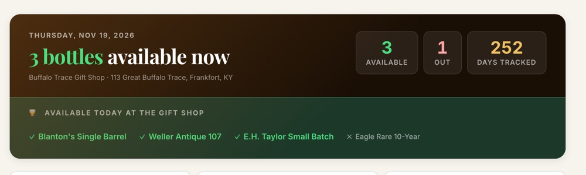
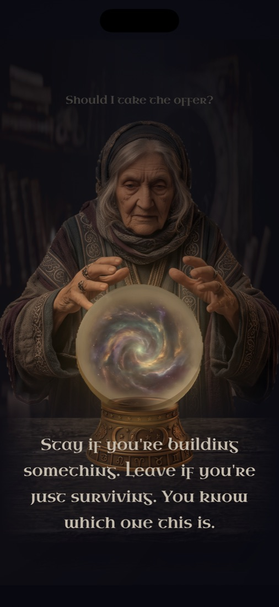
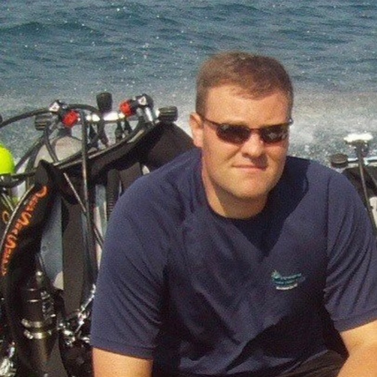

Built for the communities we belong to
Thermocline for divers, Pegbox for string players, the Buffalo Trace tracker for bourbon hunters, and Soothsay just for fun. All made by one person.
Latest : the Thermocline beta is now in 17 languages.
Public beta
Thermocline, a dive logbook
Download dives from your computer over Bluetooth or cable, bring in a MacDive or Shearwater Cloud logbook, and read gas, depth and ppO2 the way your computer recorded them.
- iPhone, iPad, Mac and Apple Watch
- Your logbook stays on your devices and in your own iCloud
- Built by an avid scuba diver


More from 616 Labs
-

Live
Buffalo Trace Bottle Drops
Which limited bottles the Buffalo Trace Distillery gift shop sells each day, with tomorrow's predictions. Text alerts are planned. Not affiliated with the distillery.
See today's tracker -


Public beta
Pegbox, a tuner for string players
Tuner, drone and metronome for violin, viola, cello, double bass, guitar, bass, ukulele, mandolin and banjo, with intonation practice.
-


Coming to the App Store
Soothsay, a fortune teller
Ask a question, typed or spoken, and a reader answers in two or three dry sentences. Everything stays on your device.
See Soothsay
No accounts, ads or analytics in our apps
-
Your data stays yours
Logbooks, readings and recordings stay on your devices, or in your own iCloud. 616 Labs runs no server that collects them.
-
Nothing to sign up for
Open the app and use it. There is no account to create and no email to hand over.
-
Made for Apple devices
Every app is written in Swift for the Apple devices it runs on, so it looks and behaves the way those devices do.

Made by Brian Wulff
616 Labs is one person: Brian Wulff, with nearly 30 years in technology. Evenings and weekends go into apps for the things he and the people around him care about, built to share with the communities who care about them too.
Most of them start at home. Thermocline is the dive log he wanted, built to meet the needs of him and his dive buddies. Pegbox was born out of what his son needs as he pursues a career in classical music performance. The Buffalo Trace tracker is for fellow bourbon hunters chasing the gift shop's daily drops.
Away from the apps he enjoys financial planning, builds the occasional website for relatives starting a business, and puts his family first.
Contact 616 Labs
Questions about an app, a problem to report, or anything else: write to Brian. Each app's support page has tips for common problems: Thermocline, Pegbox and Soothsay.